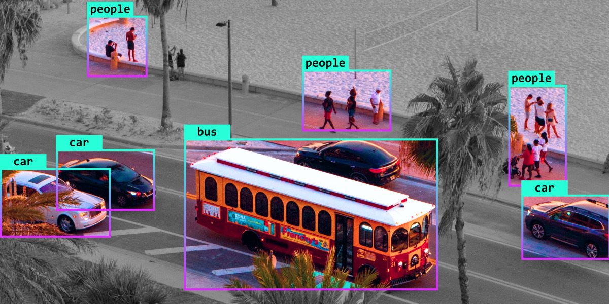
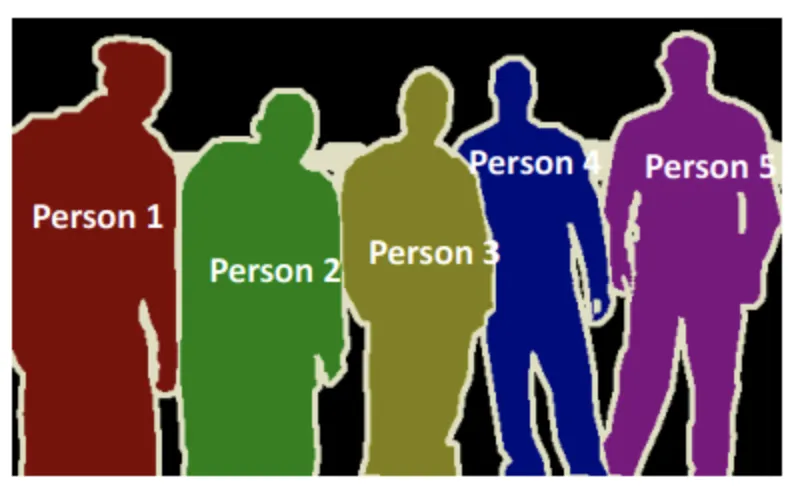

Aula07


Detecção de Objetos e Segmentação
Prof. Caio Hamamura
hamamura.caio@ifsp.edu.br

Limitações da classificação
Para quê detectar objetos
Exemplos: [DeepLabv3+ (CHEN, 2018)](https://arxiv.org/abs/1802.02611) e [SegFormer (XIE, 2018)](https://arxiv.org/abs/2105.15203)
Exemplos: [YOLOv8](https://yolov8.com/), [SAM (KIRILLOV, 2023)](https://arxiv.org/abs/2304.02643)
Segmentação
Semântica
- Quantidade total de determinada classe
Exemplo: quantidade total de vegetação em um mapa
Instância
- Quantidade e área de cada instância
Exemplo: na medicina para calcular tamanho de órgãos e comparação com normalidade